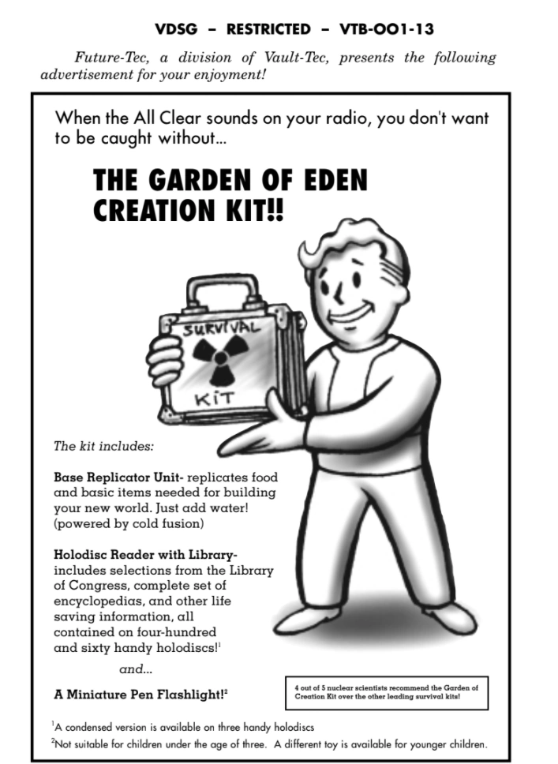
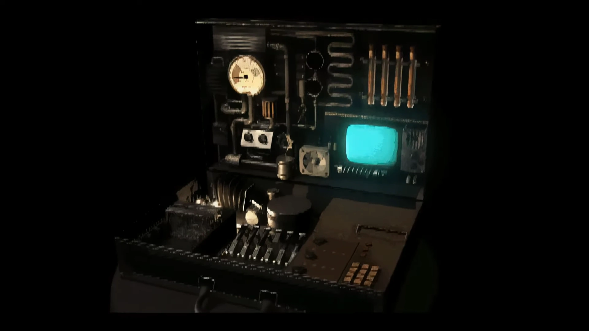
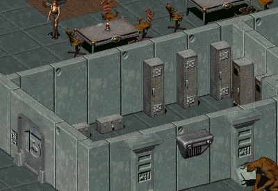
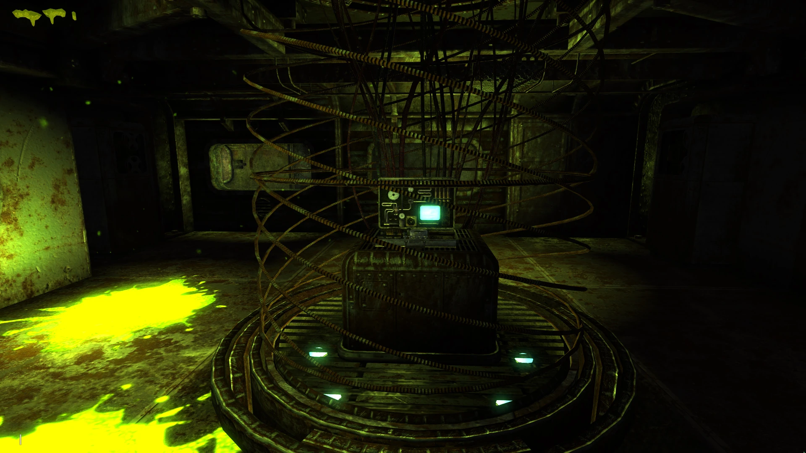
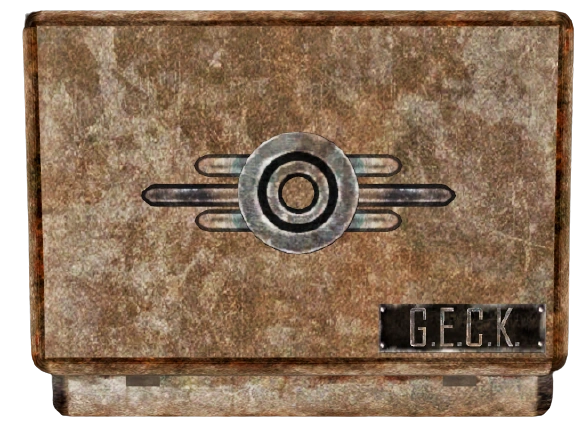
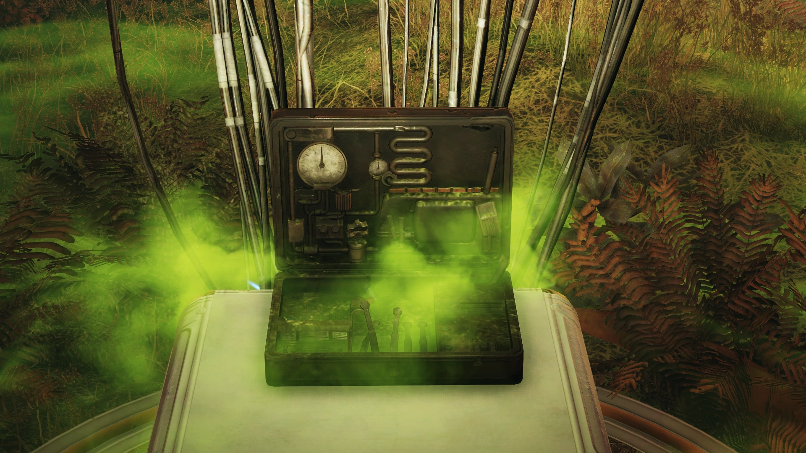
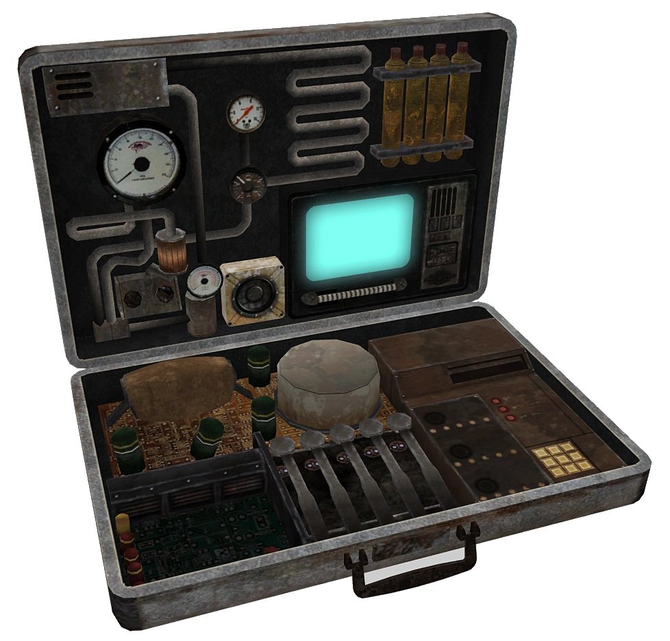

G.E.C.K.
Garden of Eden Creation Kit / エデンの園創造キット
「希望はある。わずかな希望だが、知る者は少ない。
古いディスクにはエデンの園創造キットというものの記録がある。
それはウエイストランドに命をもたらすことができると言われている。」 — アロヨの長老、Fallout 2イントロ
概要
G.E.C.K.（Garden of Eden Creation Kit / エデンの園創造キット）は、Vault-Tec傘下のFuture-Tec部門が開発したテラフォーミングデバイスである。
核戦争後のウエイストランドをVault居住者が開拓するプロセスを支援するために設計された。
Vault-Tecの社会保存プログラムの責任者であったスタニスラウス・ブラウンが開発した、最新かつ最先端のサバイバル技術の結晶である。
Vault-Tecは「仮に地球規模の完全な壊滅が起きたとしても、正常に機能するG.E.C.K.は地上に楽園を創り出す」と豪語していた。
特徴と構成

Vault Dweller's Survival Guideに掲載されたG.E.C.K.の広告
G.E.C.K.は大きな銀色のブリーフケースに収められた、完全自己完結型のテラフォーミングモジュールである。
キットには以下が含まれていた：
- 種子・土壌サプリメント — 荒廃した土地を肥沃な農地へ変換するための素材
- 常温核融合発電機 — コミュニティの主要電力として使用可能
- 物質エネルギー変換レプリケーター — 食料や基本的なアイテムの生成
- 大気化学安定装置 — 大気の浄化と安定化
- 浄水装置 — 汚染水の浄化
さらに読書資料として、米国議会図書館のセレクション、百科事典一式、フォースフィールドの設計図、アドビ建築の指示書、サンドクリート（砂利コンクリート）の製造方法などが含まれていた。
また、Vaultのシステムに追加コードを入力することで、新しいジャンプスーツのバリエーションや耐候装備の製造も可能になった。
キット自体は再建プロセスの中で分解されることを前提に設計されており、スペアパーツやエネルギー源（核融合発電機）として活用された。
Vaultには標準で2基のG.E.C.K.が支給されることになっていた。
ただし広告ほど万能ではなかった。
G.E.C.K.の開発者は核戦争後の世界がどうなるかを正確に予測できず、含まれていた種子が変異した生態系で育つかどうかも不確実だった。
Vault居住者が読み書きでき、各種技術を操作できることを前提としており、部族化した人々には使いこなせない部分もあった。
Fallout 2でのG.E.C.K.

G.E.C.K.の中身（Fallout 2）
アロヨの部族民は「聖なるGECK」の伝説を代々語り継ぎ、ウエイストランドを楽園に変えられる神聖な魔法のアイテムとして崇めていた。
シェイディ・サンズとVault CityはいずれもG.E.C.K.を使って建設された。
Vault Cityの場合、Vault 8の核融合発電機とG.E.C.K.を組み合わせて最初の建物を建設し、耕作可能な農地を生み出した。
ただしVault 8は配送ミスにより2基のうち1基しか受け取っておらず、余分なVault 13行きのウォーターチップの箱を受け取っていた。逆にVault 13はVault 8の2基目のG.E.C.K.を受け取っていた可能性が高い。

Vault 13のフットロッカー内のG.E.C.K.とウォーターチップ
2241年、アロヨが記録的な干ばつに見舞われ、Chosen OneはG.E.C.K.を探す任務を課される。
G.E.C.K.はVault 13で入手可能。デスクローのリーダー、グルサーがVault 13のコンピュータ修理の報酬として渡してくれるか、3階の倉庫ロッカーからロックピックで盗むこともできる。
また、エンクレイヴ石油リグのトラップルームのロッカーにも1基ある。
最終的に、エンクレイヴ石油リグ破壊後、Vault 13の住人とアロヨの部族民がG.E.C.K.を使ってアロヨを再建した。
Fallout 3でのG.E.C.K.

Vault 87でチャンバーから取り出されるG.E.C.K.
Lone Wanderer（孤独な放浪者）はVault 112で父ジェイムズを発見した際、プロジェクト・ピュリティを正常に稼働させるにはG.E.C.K.が必要であることを知る。
G.E.C.K.は高濃度に汚染されたVault 87に保管されており、ポトマック川の浄水を可能にする鍵となるアイテムである。

G.E.C.K.ブリーフケースのレンダー（Fallout 3）
Vault 87のG.E.C.K.は特殊な型で、一定範囲内のすべての物質を崩壊させ、再結合して「生きた、呼吸する、肥沃な処女地」を形成する能力を持つ。
スーパーミュータントの味方フォークスにG.E.C.K.の回収を任せることもできるが、自分で取りに行くことも可能。
ただし自分で起動すると青いエネルギー球が拡大し、白い光の爆発でプレイヤーキャラクターは死亡する。
Fallout 76でのG.E.C.K.

Vault 94のG.E.C.K.（Fallout 76）
アパラチアに位置する実験的なVault 94には、大戦後1年で再植民を行うためのG.E.C.K.が1基配備されていた。
Vault 94は武器も余分な資源も持たない、非暴力的な信仰コミューンが居住していた。
Vault住人がハーパーズ・フェリーの町と接触した後、町の市長ミランダ・ヴォックスはビリー、コール、ルーカス、レッドの4人の調査隊を派遣した。
4人はVaultに歓迎されたが、その従順さに疑惑を抱いたコールは部下に全住人の殺害を命じた。
遠征隊は平和主義者のVault住人からほとんど抵抗を受けずにG.E.C.K.区画にアクセスした。
午後5時51分、G.E.C.K.を何らかの洗脳装置だと思い込んだ生存者たちがミニガンで装置を撃った。
これにより核融合発電機がメルトダウンし、レベル6の核爆発が発生。放射線サージは7,800 rad/sに達した。
影響範囲は推定5.5kmで、生存した生物には重大な変異が予想された。

Vault 94のG.E.C.K.（公式アート）
Vaultの入口から濃い霧が噴出し、地域の沼地環境を急速に強化し、密生する植物を変異させた。
こうしてアパラチアの「沼地地帯（The Mire）」が誕生した。
皮肉にも、世界を楽園に変えるはずのデバイスが、異形の沼地を生み出したのである。
備考
- 『Fallout: The Roleplaying Game』のサプリメント『Once Upon a Time in the Wasteland』によると、G.E.C.K.の使用は「その半径内のすべての生命を破壊する」とされている。映画『スター・トレックII カーンの逆襲』のジェネシスデバイスに似た動作として描写されている
- 放射線汚染されたG.E.C.K.がキャンセルされた『Fallout Tactics 2』に登場する予定だった。また、改造されたプロトタイプG.E.C.K.が『Fallout: Brotherhood of Steel 2』に登場する予定だった
- Fallout 3では、プレイヤーが自分でG.E.C.K.を持ち上げる際のダイアログボックスで「Garden of Eden Construction Kit」と誤表記されている
ギャラリー

G.E.C.K.はFalloutシリーズの中で最も美しい皮肉を体現するアイテムだと思う。
「エデンの園」という名を冠しながら、その実態は「楽園を約束するが保証はしない」という、Vault-Tecらしい詐欺的な楽観主義の産物だ。
Fallout 2では聖遺物のように崇められ、Fallout 3では一定範囲の物質を崩壊・再結合させる恐るべき科学兵器のような描写へと変貌する。
そしてFallout 76では、楽園を創るはずのデバイスが恐怖と無知によってミニガンで撃たれ、結果として異形の沼地「沼地地帯」を生み出すのだから、Falloutの世界観の縮図そのものだ。
「水を加えてかき混ぜるだけ」という説明文の底知れない楽観主義が、シリーズを通じて何度もひっくり返される様は、このシリーズが戦前のアメリカン・ドリームを風刺するRPGであることを改めて思い出させてくれる。
This article was created by translating and editing G.E.C.K., G.E.C.K. (Fallout 2), G.E.C.K. (Fallout 3), and G.E.C.K. (Fallout 76) from Nukapedia: The Fallout Wiki.
Licensed under the Creative Commons Attribution-Share Alike License (CC BY-SA 3.0).
© Overseer Mohi's Terminal — Fallout Lore Archive
コミュニティ維持のため、寄付を受け付けております。
> COMMENTS